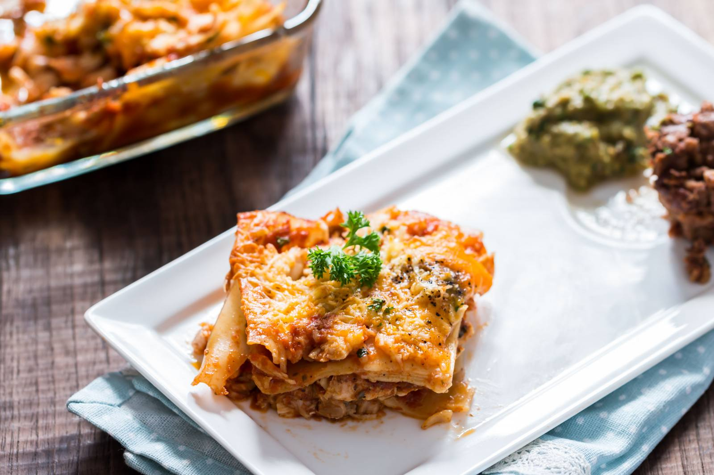

Lasagna

Description
Chicken Lasagna Recipe is a a rich dish of alternate layers of thin sheets of pasta with juicy and flavour packed chicken in tomato salsa sauce and topped with cheese, baked to perfection.
This is one of the easy lasagna recipes. Lasagna is one of the easiest and oldest pasta dishes. I am sure many of you have your favourite lasagna recipe for your busy weeknight. Be it for a busy weeknight or for the special family gathering, or a party, this classic pasta dish, will impress one and all.
Your family and friends will love the gooey lasagna, packed with chicken swimming in fresh tomato salsa and cheese. Most classic favourite lasagna is the meat Bolognese, this easy chicken lasagna is as delicious as the classic favourite. Easy, fast and delicious.
Ingredients
For Chicken Filling
- 300 grams Boneless Chicken
- 1 tablespoon black pepper
- powder
- 1-1/2 teaspoon Paprika powder
- 1 lemon juice
- Salt, to taste
For the Lasagna
- 10 lasagna sheets, ones that need no pre-cooking
- 1 cup mozzarella cheese, shredded
- Parmesan Cheese
- 1 cup tomato basil pasta sauce
- 1/2 cup parsley leaves, chopped
Steps
- To begin making the Chicken Lasagna recipe, wash and clean chicken well. Add pepper powder, lime juice, salt and paprika powder, mix well in a mixing bowl.
- Cover and let the chicken marinate for about 1 to 2 hours.
- Later add olive oil into a pan. And sauté the marinated chicken pieces on medium flame until cooked well. This will take about 15 minutes approximately.
- Preheat the oven to 170 degree centigrade. Grease a 9-by-13-inch baking dish with butter well. Place a layer of cooked lasagna sheet in one layer.
- Add some tomato pasta sauce, sprinkle cheese, layer chicken pieces on top, and sprinkle some more cheese on top of the chicken and some finely chopped parsley as well. Repeat the same step and keep layering until you reach the top of the pan.
- Bake the lasagna pasta in preheated oven for about 7 to 12 minutes or until cheese melts and top is slightly browned.
- Let the lasagna rest for about 10 minutes, then scatter the sliced parsley leaves on top, cut into squares and serve.
- Serve Chicken Lasagna on its own with some Fennel Pesto Pull-Apart Bread Recipe and a glass of wine for a perfect weekend dinner.